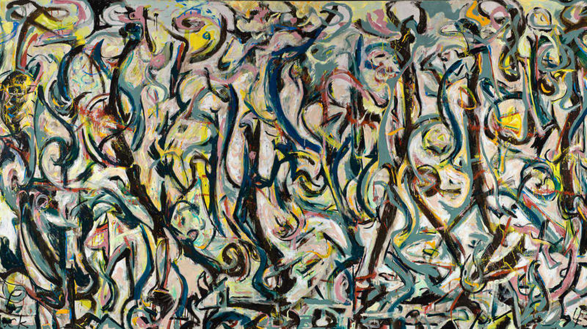

Expresiones Contemporáneas
15 de Julio
La exhibición "Expresiones Contemporáneas" en el Museo de Bellas Artes presenta obras frescas y vanguardistas de artistas emergentes, explorando temas actuales y desafiando las convenciones artísticas. Descubre una nueva perspectiva del arte contemporáneo en esta imperdible muestra.
Renacimiento Redefinido
1 de agosto
"Renacimiento Redefinido" en el Museo de Bellas Artes exhibe las obras maestras más destacadas de la era del Renacimiento. Descubre el legado de artistas como Leonardo da Vinci y Rafael en una muestra que celebra la belleza y la genialidad artística de ese período icónico.
Arte Surrealista
15 de septiembre
La próxima exhibición en el Museo de Bellas Artes explorará el fascinante mundo del arte surrealista. Descubre las obras de destacados artistas surrealistas como Salvador Dalí, René Magritte y Max Ernst. Adéntrate en un reino de sueños, símbolos y realidades transformadas. ¡Prepárate para una experiencia artística surrealista única!

Expresionismo Abstracto
1 de octubre
La próxima exhibición en el Museo de Bellas Artes te llevará al apasionante mundo del expresionismo abstracto. Descubre las obras de artistas icónicos como Jackson Pollock, Willem de Kooning y Mark Rothko. Sumérgete en la intensidad emocional y la energía cruda de este movimiento artístico innovador. ¡No te pierdas esta experiencia impactante de expresión y abstracción!
Arte Fotográfico Contemporáneo
15 de noviembre
La próxima exhibición en el Museo de Bellas Artes te invita a sumergirte en el mundo del Arte Fotográfico Contemporáneo. Descubre una amplia gama de perspectivas, técnicas innovadoras y temas intrigantes capturados por talentosos fotógrafos modernos. Explora el poder de la imagen y su capacidad para contar historias y provocar emociones en esta cautivadora muestra fotográfica.
Arte Cinético: Movimiento en el Arte
1 de diciembre
La siguiente exhibición en el Museo de Bellas Artes es "Arte Cinético: Movimiento en el Arte". Descubre cómo las obras de arte cobran vida a través del movimiento y la interacción. Experimenta la fascinante combinación de arte y tecnología en una muestra que te llevará a un mundo de dinamismo y sorpresas visuales. No te pierdas esta experiencia artística única y estimulante.